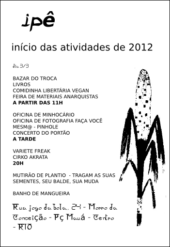

Recentemente publicamos uma nota sobre a decisão positiva para as rádios livres. Um pouco antes, comentamos sobre "estruturas distribuídas". Thiago Novaes disse:
aliadxs
V!RUS chama para publicações até 19/03
O Núcleo de Estudos de Habitares Interativos, da Universidade de São Paulo USP, recebe até o dia 19 de março artigos e projetos, em português, inglês e espanhol, para o número sete, da revista V!RUS. O tema proposto para as colaborações é "Ações Culturais/Cultural Actions":
Buscamos expandir a interlocução com o olhar de distintas áreas de conhecimento em torno desse tema, presente nas discussões teóricas mais amplas das ciências sociais, das artes, da educação, da filosofia, das políticas públicas, dos estudos sobre sustentabilidade sócio-ambiental e em pesquisas transdisciplinares aplicadas. Tal tema está também na agenda - e nas práticas - de coletivos ligados a expressões artísticas diversas e à cultura digital, de artistas ligados à artemídia, dos grupos ligados aos movimentos de Mídia Livre, entre outros.
As informações para autores podem ser acessadas aqui. Serão aceitas colaborações em forma de texto e imagens fixas, vídeos, slides, fotografias, depoimentos em áudio, animações, entrevistas, e projetos multi-linguagens, de arquitetura, urbanismo e design além de reflexões críticas sobre suas concepções.
Para conhecer mais sobre a publicação veja a sexta edição do projeto sob a temática "Criação em Processos +s".
LabSurLab, 2012.
Em junho de 2012 acontecerá em Quito, no Equador, a segunda edição do LabSurLab. O evento promove a temática da experimentação para a inovação social urbana. LabSurLab está aberto para participações e apoios de instituições, grupos e indivíduos que estejam interessados na promoção, criação e uso de tecnologias sociais.

*foto do LabSurLab de 2011, por MidiaTatica
Mais informações podem ser vistas no site.
Festa no ip://
Acontece no próximo dia 03 de março, uma festividade que dará início às atividades no ip:// (ipê), em 2012. Nessa data haverá bazar do troca- troca, feira de materiais anarquistas, livros livres, comiva vegan, oficina de minhocário e pinhole, concerto do portão, mutirão de plantio e circo akrata. O espaço ip:// (ipê) está localizado no morro da Conceição no Rio de Janeiro, agrega ações autogestionadas, além de um constante fluxo de pessoas e idéias.
